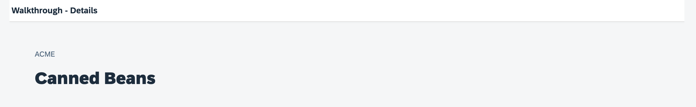

To make this work, we have to pass over the information which item has been selected to the detail page and show the details for the item there.

You can view and download all files at Walkthrough - Step 31.
{
…
"sap.ui5": {
…
"routing": {
"config": {
"routerClass": "sap.m.routing.Router",
"type": "View",
"viewType": "XML",
"path": "ui5.walkthrough.view",
"controlId": "app",
"controlAggregation": "pages"
},
"routes": [
{
"pattern": "",
"name": "overview",
"target": "overview"
},
{
"pattern": "detail/{invoicePath}",
"name": "detail",
"target": "detail"
}
],
"targets": {
"overview": {
"id": "overview",
"name": "Overview"
},
"detail": {
"id": "detail",
"name": "Detail"
}
}
}
}
}We now add a navigation parameter invoicePath to the detail route so that we can hand over the information for the
selected item to the detail page. Mandatory navigation parameters are defined with curly brackets.
<mvc:View controllerName="ui5.walkthrough.controller.Detail" xmlns="sap.m" xmlns:mvc="sap.ui.core.mvc"> <Page title="{i18n>detailPageTitle}"> <ObjectHeader intro="{invoice>ShipperName}" title="{invoice>ProductName}"/> </Page> </mvc:View>
We add a controller that will take care of setting the item's context on the view and
bind some properties of the ObjectHeader to the fields of our
invoice model. We could add more detailed information from the
invoice object here, but for simplicity reasons we just display
two fields for now.
sap.ui.define([
"sap/ui/core/mvc/Controller",
"sap/ui/model/json/JSONModel",
"sap/ui/model/Filter",
"sap/ui/model/FilterOperator"
], (Controller, JSONModel, Filter, FilterOperator) => {
"use strict";
return Controller.extend("ui5.walkthrough.controller.InvoiceList", {
…
onPress(oEvent) {
const oItem = oEvent.getSource();
const oRouter = this.getOwnerComponent().getRouter();
oRouter.navTo("detail", {
invoicePath: window.encodeURIComponent(oItem.getBindingContext("invoice").getPath().substring(1))
});
}
});
});The control instance that has been interacted with can be accessed by the
getSource method that is available for all OpenUI5 events. It will
return the ObjectListItem that has been clicked in our case. We
will use it to pass the information of the clicked item to the detail page so that
the same item can be displayed there.
In the navTo method we now add a configuration object to fill the
navigation parameter invoicePath with the current information of
the item. This will update the URL and navigate to the detail view at the same time.
On the detail page, we can access this context information again
and display the corresponding item.
To identify the object that we selected, we would typically use the key of the item in the back-end system because it is short and precise. For
our invoice items however, we do not have a simple key and directly use the binding path to keep the example short and simple. The
path to the item is part of the binding context which is a helper object of OpenUI5 to manage the binding information for controls. The binding
context can be accessed by calling the getBindingContext method with the model name on any bound OpenUI5 control. We need to remove the first / from the
binding path by calling .substring(1) on the string because this is a special character in URLs and is not allowed;
we will add it again on the detail page. Also, the binding path might contain special characters which are not allowed in URLs, so we
have to encode the path with encodeURIComponent.
sap.ui.define([
"sap/ui/core/mvc/Controller"
], (Controller) => {
"use strict";
return Controller.extend("ui5.walkthrough.controller.Detail", {
onInit() {
const oRouter = this.getOwnerComponent().getRouter();
oRouter.getRoute("detail").attachPatternMatched(this.onObjectMatched, this);
},
onObjectMatched(oEvent) {
this.getView().bindElement({
path: "/" + window.decodeURIComponent(oEvent.getParameter("arguments").invoicePath),
model: "invoice"
});
}
});
}); Our last piece to fit the puzzle together is the detail controller. It needs to set
the context that we passed in with the URL parameter invoicePath on
the view, so that the item that has been selected in the list of invoices is
actually displayed, otherwise, the view would simply stay empty.
In the onInit method of the controller we fetch the instance of our app router and attach to the detail route by calling the
method attachPatternMatched on the route that we accessed by its name. We register an internal callback function
onObjectMatched that will be executed when the route is hit, either by clicking on the item or by calling the app
with a URL for the detail page.
In the onObjectMatched method that is triggered by the router we receive an event that we can use to access the URL and
navigation parameters. The arguments parameter will return an object that corresponds to our navigation parameters
from the route pattern. We access the invoicePath that we set in the invoice list controller and call the
bindElement function on the view to set the context. We have to add the root / in front of the
path again that was removed for passing on the path as a URL parameter. Because we have encoded the binding path part in the URL
before, we have to decode it again with decodeURIComponent.
The bindElement function is creating a binding context for a OpenUI5 control and
receives the model name as well as the path to an item in a configuration object.
This will trigger an update of the UI controls that we connected with fields of the
invoice model. You should now see the invoice details on a separate page when you
click on an item in the list of invoices.
Define the routing configuration in the manifest.json / app descriptor
Component#init function